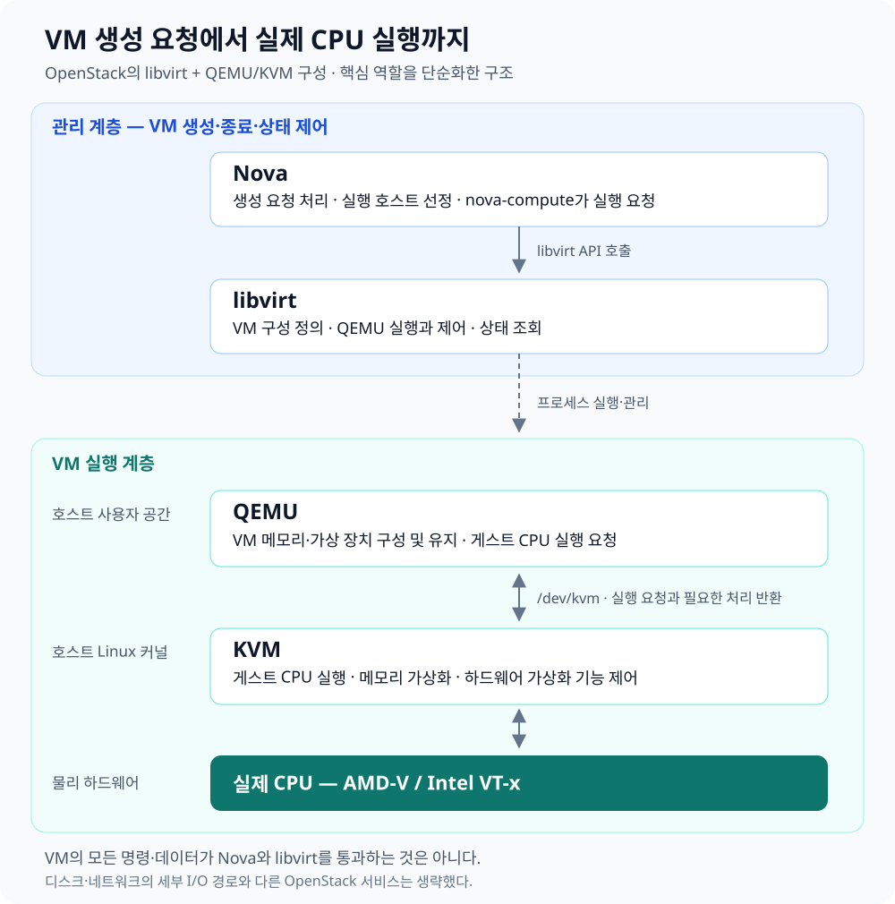

OpenStack에서 VM을 생성하면 여러 구성 요소가 협력해 가상 컴퓨터를 준비하고 실행한다. VM을 어디에 배치할지 결정하는 일, 가상 장치를 구성하는 일, 게스트 운영체제의 CPU 코드를 실행하는 일이 각각 다른 계층에 나뉘어 있기 때문이다.
Nova는 클라우드 관점에서 VM을 관리하고, libvirt는 호스트에서 VM의 실행을 제어한다. QEMU는 가상 컴퓨터의 장치와 실행 환경을 제공하며, KVM은 호스트 Linux 커널에서 게스트 CPU 실행과 메모리 가상화의 핵심 기능을 담당한다.
이 구조를 이해하려면 관리 요청의 흐름, CPU 실행 경로, 디스크 읽기 경로를 구분해야 한다. 모든 작업이 동일한 순서로 각 계층을 통과하는 것은 아니다.
1. 전체 계층 구조
이 글은 OpenStack에서 사용하는 libvirt + QEMU/KVM 구성을 기준으로 설명한다.


| 계층 | 구성 요소 | 주요 역할 |
|---|---|---|
| 클라우드 관리 | Nova | VM 생성 요청 처리, 실행 호스트 선정, 생명주기 관리 |
| 호스트의 VM 관리 | libvirt | VM 구성 정의, QEMU 실행·제어, 상태 조회 |
| 가상 컴퓨터 구성 | QEMU | 게스트 메모리와 가상 장치 구성, VM 실행 환경 유지 |
| 커널 가상화 | KVM | 게스트 CPU 실행, 메모리 가상화 등 핵심 기능 |
| 물리 하드웨어 | CPU·메모리·저장장치 등 | 실제 연산과 데이터 저장·전송 |
도식의 아래쪽은 주로 CPU 실행 관계를 나타낸다. 디스크·네트워크 데이터가 반드시 KVM을 거쳐 흐른다는 뜻은 아니다.
2. Nova: VM을 어디에, 어떤 사양으로 만들지 관리한다
사용자가 Horizon이나 OpenStack CLI에서 다음과 같은 요청을 보냈다고 가정하자.
Ubuntu 이미지로 가상 CPU 2개, 메모리 4GB인 VM을 생성한다.
Nova는 이 요청을 받아 VM 생성 과정을 조율한다. 여러 컴퓨트 호스트가 있다면 자원과 정책에 맞는 호스트를 선택해야 하고, 이미지·네트워크·스토리지 준비도 필요하다.
이를 위해 Nova는 다른 서비스와 협력한다.
- Glance: 운영체제 이미지 관리
- Neutron: VM의 네트워크와 포트 관리
- Cinder: VM에 연결할 블록 볼륨 관리
- Placement: 자원 정보와 할당 관리 지원
Nova의 스케줄러가 실행 호스트를 선정하면, 해당 호스트의 nova-compute가 가상화 드라이버를 통해 VM 실행을 요청한다. 여기서 설명하는 구성에서는 libvirt를 이용한다. Nova 공식 문서
Nova는 VM 안에서 실행되는 CPU 명령어나 디스크 요청을 하나씩 처리하지 않는다. VM의 생성·배치·종료 같은 관리 작업을 담당한다.
3. libvirt: VM 구성을 QEMU의 실행과 관리로 연결한다
호스트가 정해졌다면 실제 VM 실행 프로그램을 시작해야 한다.
QEMU를 실행하려면 CPU·메모리·디스크·네트워크 등을 설정해야 한다. 실행 후에도 상태 조회, 종료, 장치 연결 같은 관리 기능이 필요하다.
libvirt는 이런 작업을 API와 관리 서비스로 제공한다. Nova가 전달한 VM 구성을 바탕으로 QEMU를 실행하고 제어한다. libvirt QEMU 드라이버 문서
따라서 관리 요청은 다음과 같이 이어진다.
Nova의 VM 실행 요청 → libvirt의 구성·실행 제어 → QEMU 프로세스 실행
libvirt 역시 VM 안의 프로그램이 수행하는 모든 계산이나 디스크 I/O를 중계하는 계층은 아니다.
4. QEMU: 가상 컴퓨터를 구성하고 계속 운영한다
운영체제가 실행되려면 CPU뿐 아니라 메모리, 디스크, 네트워크 카드 같은 환경이 필요하다.
QEMU는 호스트에서 실행되는 사용자 공간 프로그램으로, 게스트 운영체제가 사용할 가상 컴퓨터를 구성한다. 일반적인 구성에서는 VM마다 QEMU 프로세스가 하나씩 실행된다.
QEMU는 다음과 같은 일을 수행한다.
- 게스트 메모리를 마련한다.
- 가상 CPU 모델과 가상 장치를 구성한다.
- 이미지 파일이나 블록 장치를 가상 디스크에 연결한다.
- 가상 장치의 동작과 상태를 처리한다.
- KVM을 사용하는 경우 가상 CPU 생성·설정·실행을 요청한다.
QEMU는 VM의 틀만 만들고 역할을 끝내는 껍데기가 아니다. VM이 켜져 있는 동안 계속 실행되며, 가상 장치와 실행 환경을 제공한다. QEMU 공식 문서
예를 들어 qcow2 이미지 파일을 사용한다면, 가상 디스크의 어느 위치가 이미지 파일의 어디에 대응하는지 해석하는 기능도 QEMU에 있다.
5. KVM: 호스트 커널에서 게스트 실행을 지원한다
VM 안의 운영체제와 프로그램도 결국 CPU 명령어로 이루어져 있다. 이 명령어를 실행할 방법이 필요하다.
KVM은 Linux 커널에 포함된 가상화 기능이다. CPU의 AMD-V나 Intel VT-x 같은 하드웨어 가상화 기능을 이용해 게스트 코드를 실행하고, 게스트 CPU 상태와 메모리 가상화 등을 관리한다.
QEMU는 /dev/kvm 인터페이스를 통해 VM과 가상 CPU 생성, 메모리 등록, 가상 CPU 실행 등을 요청한다. Linux KVM API 문서
여기서 실행 대상을 구분해야 한다.
| 대상 | 실행 방식 |
|---|---|
| QEMU 프로그램 자체 | 일반적인 호스트 프로그램처럼 Linux에서 실행 |
| VM 안의 게스트 코드 | QEMU가 KVM을 이용해 하드웨어 가상화 환경에서 실행 |
KVM이 QEMU 프로그램 자체를 실행해 주는 것은 아니다. QEMU가 구성한 VM의 게스트 코드를 실행하는 데 KVM을 이용한다.
또한 KVM은 호스트 커널과 별도로 존재하는 중간 프로그램이 아니다. KVM 자체가 호스트 커널의 일부다.
6. 게스트 커널과 호스트 커널은 각각 무엇을 관리하는가?
Linux VM에는 Linux 커널이 있고, VM을 실행하는 Linux 호스트에도 Linux 커널이 있다.
두 커널은 각자 관리하는 범위가 다르다.
| 구분 | 게스트 커널 | 호스트 커널 |
|---|---|---|
| 위치 | VM 내부 | 물리 서버의 운영체제 |
| 프로그램 관리 | VM 안의 프로그램과 프로세스 | QEMU를 포함한 호스트 프로그램 |
| CPU 관리 | 게스트 스레드를 가상 CPU에 배치 | 가상 CPU를 실행하는 호스트 스레드 등을 물리 CPU에 배치 |
| 메모리 관리 | VM에 주어진 메모리 안에서 주소 공간 관리 | 실제 호스트 메모리 배분·보호 |
| 장치 관리 | VM에 보이는 장치의 드라이버와 파일시스템 | 호스트의 실제 장치와 I/O 경로 관리 |
예를 들어 VM에 메모리 4GB를 주면, 게스트 커널은 그 4GB를 자신의 메모리로 관리한다. 호스트 커널은 그 게스트 메모리를 뒷받침하는 실제 메모리 자원을 관리한다.
게스트 커널의 시스템 호출이 그대로 호스트 커널에 전달되는 것은 아니다. VM 안의 프로그램이 파일을 열면 우선 게스트 커널이 자신의 파일시스템과 권한을 기준으로 처리한다.
7. CPU 실행 경로: 일반 명령은 실제 CPU가 실행한다
VM 안에서 프로그램이 덧셈이나 반복문을 실행한다고 생각해보자.
QEMU/KVM 구성에서는 게스트의 일반적인 CPU 명령을 QEMU가 하나씩 해석해서 대신 실행하지 않는다. KVM이 설정한 하드웨어 가상화 환경에서 실제 CPU가 실행한다.
개념적으로는 다음과 같다.
- QEMU의 가상 CPU 스레드가 KVM에 게스트 실행을 요청한다.
- 실제 CPU가 가상화 환경에서 게스트 코드를 실행한다.
- 호스트 처리가 필요한 이벤트가 발생하면 제어가 호스트 쪽으로 돌아온다.
- KVM이 처리하거나, 필요한 경우 QEMU에 처리를 맡긴다.
- 처리가 끝나면 게스트 실행을 재개한다.
게스트 커널의 코드도 이 환경 안에서 실행된다. VM 안에서 시스템 호출이 발생했다고 해서 항상 호스트의 QEMU까지 제어가 돌아오는 것은 아니다.
또한 메모리 접근마다 QEMU가 주소를 변환해 주는 것도 아니다. 일반적인 현대 x86 KVM 구성에서는 설정된 주소 변환 정보를 바탕으로 하드웨어가 대부분의 주소 변환을 수행한다.
8. 디스크 읽기 경로: 가상 디스크 요청이 호스트 저장 공간 접근으로 연결된다
디스크 접근은 CPU 코드 실행과 다른 경로를 가진다.
VM의 가상 디스크가 호스트의 vm.qcow2 파일에 연결되어 있고, QEMU가 디스크 요청을 처리하는 구성을 예로 들어보자. 캐시에 데이터가 없어 실제 I/O가 필요한 상황을 가정한다.
① 게스트 프로그램이 파일 읽기를 요청한다
VM 안의 프로그램이 /data/example.txt를 읽으려고 한다.
이 요청을 처음 받는 것은 게스트 커널이다.
② 게스트 파일시스템이 파일 위치를 해석한다
게스트 커널의 파일시스템은 해당 파일의 데이터가 가상 디스크의 어느 위치에 저장되어 있는지 확인한다.
이 단계에서 파일 경로가 디스크 위치에 대한 요청으로 바뀐다.
“
/data/example.txt를 읽어라”
→ “가상 디스크의 특정 위치에서 데이터를 읽어라”
③ 게스트 드라이버가 가상 디스크에 요청한다
게스트의 디스크 드라이버가 가상 장치에 읽기 요청을 전달한다.
QEMU가 해당 장치를 처리하는 구성이라면, QEMU의 장치 구현이 이 요청을 받아 처리한다.
④ QEMU가 호스트 쪽 저장 위치를 찾는다
QEMU는 가상 디스크의 위치가 vm.qcow2 파일의 어디에 대응하는지 해석한다.
⑤ QEMU가 호스트의 I/O 기능을 이용한다
QEMU는 호스트 커널의 파일 I/O 기능을 이용해 필요한 데이터를 읽는다. 호스트 캐시에 데이터가 없다면 저장장치까지 요청이 이어진다.
데이터가 준비되면 가상 장치의 요청이 완료되고, 게스트 커널을 통해 프로그램에 결과가 전달된다.
이 예시의 흐름은 다음과 같다.
게스트 프로그램 → 게스트 커널·파일시스템 → 가상 디스크 드라이버 → QEMU → 호스트 커널의 저장장치 I/O 기능 → 실제 저장장치
호스트 쪽에서는 게스트의 파일 경로 대신 이미지 파일의 특정 위치에 대한 읽기 요청을 처리한다.
이 설명은 QEMU가 디스크 I/O를 담당하는 기본 예시다. 커널이나 별도 프로세스에서 장치 처리를 수행하거나 장치를 직접 할당하면 경로가 달라질 수 있다. QEMU 장치 문서
9. QEMU가 커널을 사용한다고 모두 KVM을 사용하는 것은 아니다
호스트 Linux 커널에는 KVM 외에도 파일시스템, 네트워크, 메모리 관리 등 많은 기능이 있다.
따라서 QEMU는 작업에 따라 서로 다른 기능을 사용한다.
| QEMU가 수행할 작업 | 이용하는 기능 |
|---|---|
| 가상 CPU 실행 | 호스트 커널의 KVM 기능 |
| 디스크 이미지 파일 읽기·쓰기 | 호스트 커널의 파일 I/O 기능 |
| 호스트 소켓을 통한 통신 | 호스트 커널의 네트워크 기능 |
| 이미지 형식과 가상 장치 상태 해석 | QEMU 내부 코드 |
가상 장치 요청이 QEMU에 전달되는 과정에 KVM이 관여할 수는 있다. 그러나 QEMU가 요청을 받은 뒤 수행하는 모든 작업이 다시 KVM을 거쳐야 하는 것은 아니다.
이 때문에 다음처럼 구분하는 것이 정확하다.
KVM은 게스트 CPU 실행과 메모리 가상화의 핵심을 맡는다. QEMU는 가상 컴퓨터의 장치와 실행 환경을 운영하며, 필요한 작업에 따라 KVM이나 호스트 커널의 다른 기능을 사용한다.
10. 하이퍼바이저라는 이름과 구성 요소의 관계
하이퍼바이저는 자원을 가상화하여 게스트 운영체제가 격리된 VM에서 실행되도록 하는 소프트웨어 계층을 말한다.
KVM 자체를 하이퍼바이저라고 부르며, 전체 실행 구성을 가리킬 때는 QEMU/KVM이라고도 표현한다. QEMU는 이 구성에서 사용자 공간 VMM, 즉 Virtual Machine Monitor 역할을 한다.
모든 가상화 환경이 같은 조합을 사용하는 것은 아니다.
- QEMU + KVM: Linux의 하드웨어 가상화 구성
- QEMU + TCG: QEMU가 CPU를 소프트웨어로 에뮬레이션
- QEMU + HVF: macOS의 Hypervisor.framework 이용
- Firecracker + KVM: 최소한의 가상 장치를 갖춘 microVM 구성
QEMU의 실행 방식은 선택한 가속기에 따라 달라지고, KVM을 사용하는 VMM도 QEMU 하나뿐인 것은 아니다. QEMU 가속기 문서, Firecracker 공식 설명
또한 CPU의 하드웨어 가상화 기능은 KVM 전용이 아니다. Xen 같은 다른 하이퍼바이저도 Intel VT-x와 AMD-V를 이용할 수 있다. Xen 공식 문서
11. OpenStack 설정은 이 계층을 어떻게 선택하는가?
Kolla-Ansible의 다음 설정은 KVM 기반 실행 방식을 선택한다.
nova_compute_virt_type: "kvm"
이 구성에서 Nova의 핵심 설정은 다음 형태다.
[DEFAULT]
compute_driver = libvirt.LibvirtDriver
[libvirt]
virt_type = kvm
| 설정 | 선택하는 대상 |
|---|---|
compute_driver = libvirt.LibvirtDriver |
Nova가 VM을 관리할 때 사용할 libvirt 연동 드라이버 |
virt_type = kvm |
libvirt가 사용할 QEMU/KVM 실행 방식 |
Kolla-Ansible 2026.1의 일반 VM 배포 템플릿은 libvirt 드라이버를 설정한다. 따라서 관리자가 globals.yml에 libvirt를 직접 적지 않아도 해당 구성이 생성된다. Kolla 설정 생성 템플릿
여기서 virt_type을 qemu로 선택하면 QEMU의 소프트웨어 에뮬레이션을 사용하는 구성이 된다. kvm과 qemu는 QEMU를 설치할지 말지를 고르는 옵션이 아니라, 해당 libvirt 구성에서 게스트 CPU를 실행하는 방식을 선택하는 값이다. Kolla libvirt 문서
12. 관리 장애와 실행 장애도 구분해야 한다
계층의 역할을 나누면 장애의 영향도 구분할 수 있다.
| 장애 예시 | 일반적인 영향 |
|---|---|
| Nova API 접근 불가 | VM 생성·조회 같은 관리 요청이 실패할 수 있지만, 기존 VM이 즉시 정지하는 것은 아님 |
| libvirt 관리 서비스 문제 | VM 제어·상태 조회가 어려워질 수 있지만, 기존 QEMU 프로세스는 계속 실행될 수 있음 |
| 특정 VM의 QEMU 프로세스 종료 | 해당 VM 실행 중단 |
| 호스트 커널 장애·서버 전원 종료 | 해당 호스트에서 실행하던 VM 전체에 영향 |
이는 기본적인 책임 경계에 따른 설명이다. 실제 복구나 자동 재시작 동작은 서비스 설정에 따라 달라진다.
VM 관리 요청이 성공하는지, QEMU 프로세스가 살아 있는지, 게스트 운영체제가 정상 동작하는지는 각각 다른 상태이므로 따로 확인해야 한다.